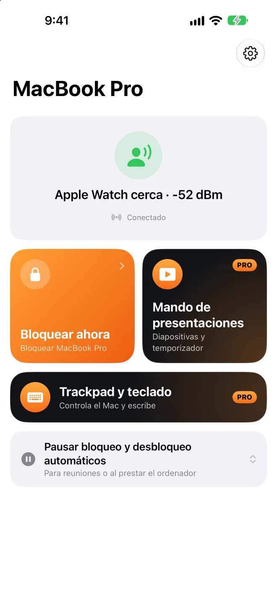

Aléjate y se bloquea.Vuelve y se desbloquea.
Una app en la barra de menús del Mac que escucha la señal Bluetooth de tu iPhone o tu Apple Watch.No hace falta instalar nada en el iPhone ni en el reloj.
La app para Mac es gratuita y de código abierto. Requiere macOS 26 o posterior.
y se desbloquea Aléjate hasta aquí
y se bloquea
Apple Watch cerca−52 dBm
Arrastra Tú hacia la derecha y luego vuelve.
Mejor desbloquear un poco tarde que dejarte fuera.
- ¿Sigues escribiendo? Espera
- Bloqueado
- Primero, el Apple Watch
- Tu iPhone lo confirma
- Luego, la contraseña
Se bloquea cuando debe. Cuando no, no estorba.
No bloquea al presentar
Con Keynote o PowerPoint en reproducción.
Más relajado en casa
Red de confianza, conectado o en tu horario.
Pausa durante un rato
De 15 min a 4 h; bloquea al terminar.
Avisa si alguien lo abre
Lo registra, hace una foto y avisa al iPhone.
Cuánto llevas hoy sentado
Te avisa para que te levantes si llevas mucho.
Si vienes de BLEUnlock
Importa dispositivos y umbrales con un clic.


En el escenario, el iPhone es tu pasador.
Sin comprar mandos.
Elige un puntero y mantén pulsado para moverlo por el panel.
Con el iPhone bloqueado
Botones en pantalla bloqueada y Dynamic Island.
En el Apple Watch también
Toca, gira la corona o usa el doble toque.
Temporizador de charla
Toque en la muñeca a 5 min y al terminar.
El volumen del Mac
Sin icono de volumen en el proyector.
El iPhone también es el trackpad y el teclado del Mac.
Escribe con el teclado del iPhone.
- Mover
- Clic izquierdo
- Clic derecho
- Desplazar
- Arrastrar
- Cambiar
Arrastra o toca en el panel, o escribe en el cuadro de texto.
Bloquear es gratis. El pasador y el trackpad son Pro.
App para Mac
Código abierto · Actualización automática
- Bloquea cuando te vas, desbloquea cuando vuelves
- Sin bloqueo al presentar o en casa
- Historial y tiempo en tu puesto
Presence Remote
iPhone · Apple Watch
- Bloqueo y pausa con un toque
- Avisos al bloquearse o desbloquearse
- Confirmación cifrada antes de desbloquear
Presence Pro
- Mando de presentacionesiPhone · Apple Watch
- Trackpad y tecladoiPhone
7 días de prueba gratis en suscripciones · En familia
Pásate a Pro en la appTu Mac solo escucha a tu iPhone.
- Sin cuenta ni servidor
- Todos los comandos cifrados
- Contraseña en tu llavero
- Código abierto
Preguntas frecuentes
¿Tengo que instalar una app en el iPhone?
No, la app para Mac basta para bloquear y desbloquear. Presence Remote añade bloqueo a distancia, avisos y confirmación antes de desbloquear; Presence Pro añade el mando de presentaciones y Trackpad y teclado.
¿Qué necesito?
Mac: macOS 26 o posterior. Presence Remote: iOS 26 o watchOS 26 o posterior. También vale solo un Apple Watch u otro dispositivo Bluetooth con dirección fija.
¿En qué se diferencia de desbloquear el Mac con el Apple Watch?
La función integrada solo desbloquea, no bloquea. Presence hace las dos cosas y deja que el reloj desbloquee primero. Funcionan juntas.
¿Se bloqueará aunque no me mueva de la silla?
La señal debe seguir débil varios segundos, y si estás escribiendo, espera. Si es muy sensible, recalibra en Dispositivos.
¿Por qué la app para Mac no está en el Mac App Store?
El desbloqueo automático escribe tu contraseña, algo que el Mac App Store no permite. La app está notarizada por Apple y se actualiza sola.
¿Con qué apps de presentaciones funciona?
Pasar diapositivas envía teclas de flecha, que entiende cualquier app de presentaciones; el láser y el foco se dibujan por encima. Activa antes “Permitir mando de presentaciones” en Presence en el Mac.
¿Cómo activo Trackpad y teclado?
En Presence en el Mac, activa “iPhone y Watch › Permitir control desde iPhone” (desactivado por omisión). Con el Mac bloqueado no se acepta ninguna acción y no se guarda nada de lo que escribas.
¿Gasta mucha batería?
Las señales se emiten de todos modos; Presence solo escucha en el Mac. El uso de CPU en el Mac suele ser menor del 1 %.